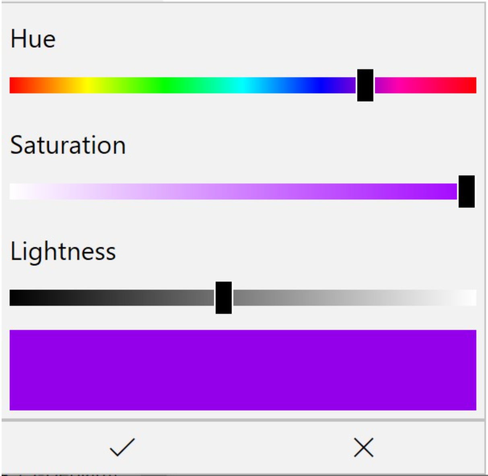

The LetterC display has 99 display pixels, and each pixel consists of three different colored LEDs, red, green, and blue. You can adjust the brightness of each of the three LEDs independently, and your eye interprets these mixtures as different colors. The intensity of each LED is controlled by a number between 0 and 255, and a set of three numbers like (55,188,76) specifies what is called a "RGB" color where 55 represents the intensity of red light (55/255), 188/255 is the intensity of green light and 76/255 is the intensity of blue light. A RGB value of (255,255,255) gives a bright white light. Describing colors as numbers is not something we are used to doing, so instead the LetterC web page uses a "color control" like the one shown below. The appearance of the color control will vary depending on what browser you are using.

The HUE slider in this control lets you pick from the entire range of colors the pixels can produce, from red on the left through yellow, green, blue, and all the way back to red on the right.
The Saturation slider controls how intense the color is. All the way to the left gives white, and all the way to the right is the most intense color of that hue.
The Lightness slider controls the overall intensity of the pixes. All the way to the left means a black pixel, and all the way to the right is a white pixel. Somewhere in the middle produces bright colors.
The Check symbol at the bottom left of the color control accepts the color you have selected, and the X rejects the color and leaves the color unchanged.
The Overall Brightnesss slider controls how bright the LetterC pixels are. All the way to the right is as bright as possible and all the way to the left is no brightness. If the display does not respond to the play button, you may have set the Overall Brightness to 0, or picked 0 lightness in the color control.